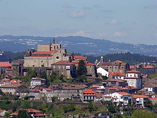

TUI
Tui é un concello galego da provincia de Pontevedra, pertencente á comarca do Baixo Miño da que é capital. Tui foi a capital dunha das sete provincias de Galicia até 1833, da provincia de Tui.
Sitios para vistar en Tui
Parque Natural Monte Aloia.
Catedral de Tui.
Ponte Internacional Tui-Valença.
Restaurantes en Tui
Casa Mesón Román
Tapería Romanías
Restaurante Romanguera
Xogos Olímpicos
Sorry, your browser does not support inline SVG.
Estas de acordo coa candidatura olímpica?
Si
No
Portada
